军队模型 动画与立绘
固定64人步兵阵列与36骑骑兵阵列，透明半身主帅立绘，两格射程的原生箭矢。
2026年10月7日更新。以下视频来自实际地图渲染的动作验证场景，依次展示骑手、按参考图重构的蓝衣弓兵，以及原生投石车和冲车动作。动作由验证脚本触发。
格内落点 目标高亮 阵型边界与兵器朝向说明
兵种特性 接战距离与城墙占格说明
骑兵 弓兵与攻城兵器修正说明
模型与使用状态

持长兵器步兵 A
d3c18f06
已接入固定步兵阵列与原生动作
原生模型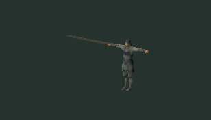
持长兵器步兵 B 2625 面
5b38b582
原始候选，尚未接入当前部队动作
原生模型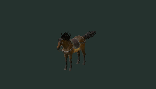
战马 原生动作与野战简化版已接入
cdf4bc12
已接入固定骑兵阵列与原生战马动作，骑手坐姿已修正
原生模型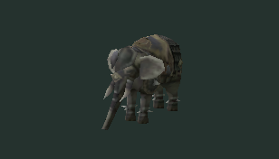
象兵 姿态待校正
a9a19ea3
原始候选，尚未接入当前部队动作
原生模型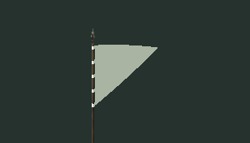
三角军旗
80c82506
原始候选，尚未接入当前部队动作
原生模型燕尾军旗
9eea5b67
已接入军旗几何，旗面颜色和文字由项目绘制
原生模型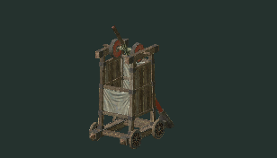
投石车 原生摆臂动作
682039a2
已接入投石车原生摆臂动作与原始贴图
原生模型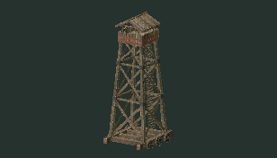
箭楼 静态建筑及原生倒塌动作候选
e5dc4fba
静态箭楼；已识别倒塌动作，不作为攻城攻击播放
原生模型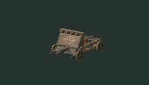
冲车 原生撞击动作
c0d5fa9c
已接入冲车原生撞槌动作与原始贴图
原生模型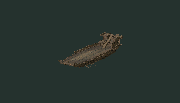
船只 桨船
bd1ef9be
原始候选，尚未接入当前部队动作
原生模型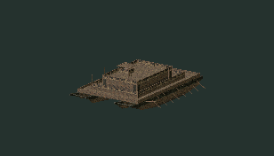
船只 双体船
9962ab33
原始候选，尚未接入当前部队动作
原生模型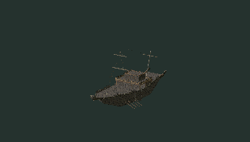
船只 帆船
9a851cde
原始候选，尚未接入当前部队动作
原生模型
箭矢
f893127a
已接入城防和野战射击，原生颜色与法线贴图
原生模型透明半身部队立绘
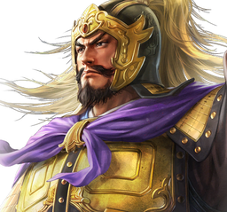
袁绍袁尚孙策田丰颜良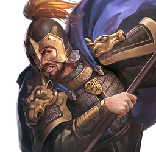
文丑袁谭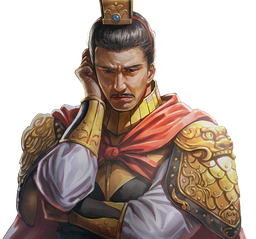
袁熙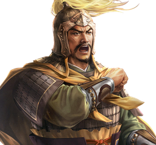
廖化关兴张苞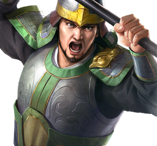
张遵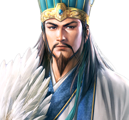
诸葛亮关凤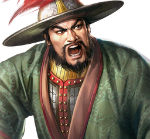
周仓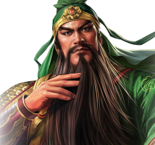
关羽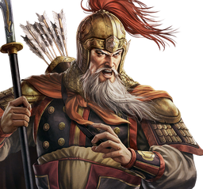
黄忠魏延恢复范围
步兵、战马、投石车和冲车原生动作已解码，箭矢原始材质已配对。骑手坐姿、旗面文字、蓝衣弓兵外观和拉弦动作由项目制作；参考图中的原版独立弓兵模型尚未确认，步兵衣甲细节和原作特效参数尚未完整恢复。
立绘使用用户指定目录中已核对的18个姓名映射，未核对的主帅使用旗帜标识。